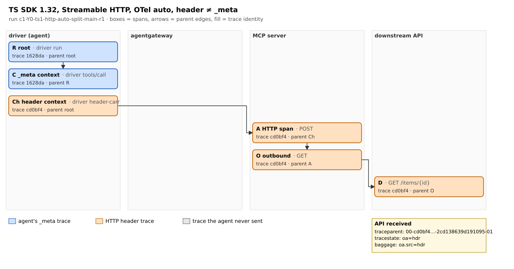
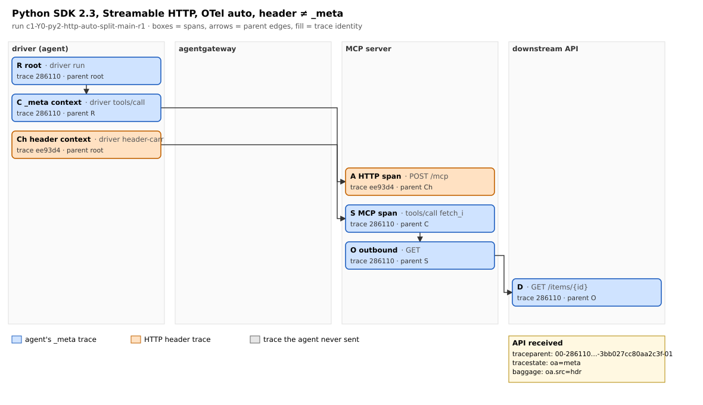
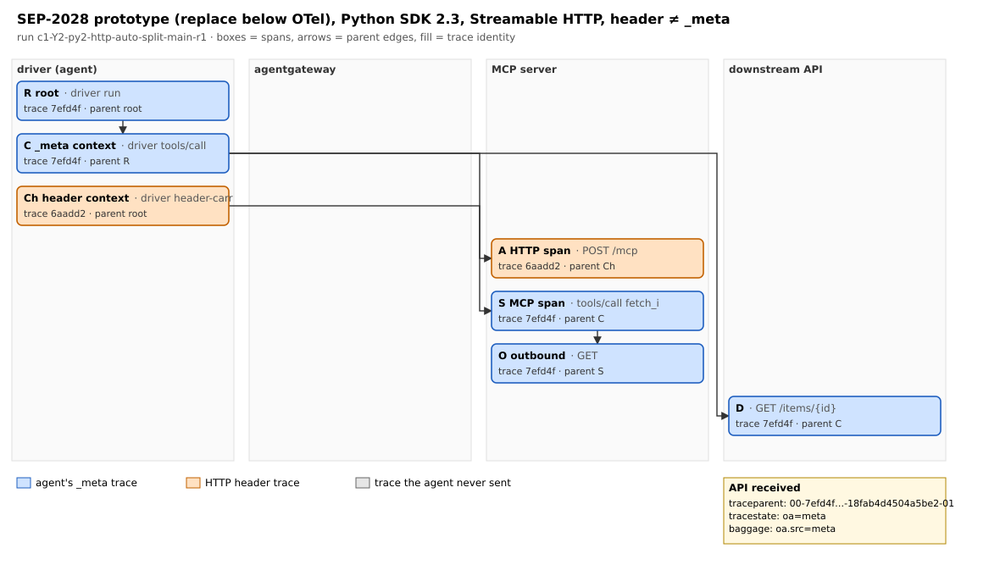
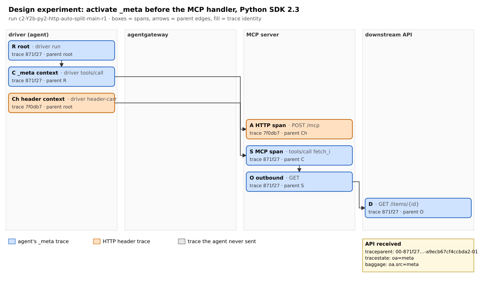

The problem
MCP gives a tool call's trace context two places to travel:
On Streamable HTTP, read and written by OpenTelemetry's HTTP instrumentation on its own.
Usually both carry the same context. They can differ when something between client and server rewrites one of
them, and the specification does not require a server to forward either to the APIs its tools call. The draft
SEP-2028 proposes that SDKs forward _meta by default:
MCP Server SDKs MUST automatically forward headers from
_metato outbound HTTP requests based on group policies. — SEP-2028 (draft) at ec3bf178346b, §2.1
So the question is: when the two disagree, which component reads which, and what reaches the next API?
Why Kubernetes
On a cluster the call crosses separately deployed pieces: the agent's pod, an AI gateway, the MCP server's pod and the APIs its tools call. In this lab each is its own pod, installed by one Helm chart. Cloud native tracing on that path, such as HTTP auto-instrumentation, gateways and eBPF instrumentation, propagates context in headers; MCP added a second carrier in the body. Three places are deciding who reconciles them:
- The SDK: draft SEP-2028 would make MCP server SDKs forward
_meta. - OpenTelemetry: the MCP conventions (Development) say which context parents the server span.
- The cluster: the Kubernetes WG AI Gateway's payload-processing and multi-stage proposals add a declarative way to set headers from body fields; as of 11 October 2026 neither mentions trace context.
The results cover released SDKs, a SEP-2028 prototype, an alternative design, agentgateway as released, and the
cluster option: agentgateway with a policy that copies _meta into the trace headers. With gateway
tracing off, that policy brought both SDKs onto _meta's trace, tracestate and baggage, with the server's
own spans kept; with gateway tracing on, the gateway's span came from the header it received before the policy ran,
and the trace was mixed. Uninstrumented servers stayed disconnected either way: the SDK and the cluster are
complementary. Switching tracing on without code: OpenTelemetry Operator injection behaved like the image's own
instrumentation for Python, but left the TypeScript (ES module) server's inbound requests uninstrumented, so the
tool's request started a new trace. eBPF instrumentation (OBI) connected uninstrumented servers through the header
only: it ignored _meta and forwarded no tracestate or baggage, and it propagated nothing inside k3d
nodes (containers); it was measured on a native k3s.
What is measured
Every span goes to an OpenTelemetry Collector whose file exporter is the evidence. For each call, the lab records which trace the server's inbound span, its MCP span, the tool's outbound span and the API's request ended up in, and which span is each one's parent, compared with a reference written before the run.
MCP TypeScript SDK 1.32.1, MCP Python SDK 2.3.0 and 1.30.0; stdio and Streamable HTTP; OpenTelemetry
auto-instrumentation off or on; header and _meta equal or deliberately different; agentgateway v1.6.0
as released. 5 runs per configuration.
Results
When the header and _meta disagree (HTTP, OpenTelemetry on)
| Server | API's trace | tracestate | baggage |
|---|---|---|---|
| TypeScript SDK 1.32 | header's | header's | header's |
| Python SDK 1.30 | header's | header's | header's |
| Python SDK 2.3 | _meta's | _meta's | header's |


_meta.The draft's rule, prototyped
| Uninstrumented server | Instrumented server (6 configurations) | |
|---|---|---|
Replace outbound headers with _meta (our prototype of SEP-2028) |
API joins the agent's trace | agent's trace, but the API's parent is the agent's span: the server's spans are bypassed |
Make _meta the handler's context (design experiment) |
not measured | the server's outbound span stays the parent; tracestate and baggage from _meta |


- Without OpenTelemetry in the server (and without a bridge), none of the three tested SDK
versions forwarded
traceparent, over stdio or HTTP. - Python SDK 2.3 forwards a mixed context when the carriers differ:
_meta's trace with the header's baggage. The span takes its parent from_meta, but the current context, whose baggage is the header's, stays active. Its MCP span also has no link to the HTTP context the conventions recommend. - agentgateway 1.6.0, as released, in the configuration tested, aligned both carriers to the
header's trace. With tracing off it still rewrote the parent span id, so the server's spans pointed to a parent
absent from the collected spans. With
_metaonly and tracing on, it started a new trace. - Where a context is activated mattered more than where it was written: replacing headers below
the instrumentation bypassed the server's spans; activating
_metafor the handler kept them.
Scope: this lab, the tested versions, plaintext HTTP/1.1, a driver that sets both carriers on purpose, our reading of a draft. Four published gateway control runs did not test what their label said; they are listed in the repository and were re-measured.
Demo: the cluster reconciles
One recording from the talk (single-node k3s, Python SDK 2.3 server behind agentgateway 1.6.0, the agent's
_meta and the HTTP header set to different traces). Three calls: the gateway as released, the gateway
with a policy that copies _meta into the trace headers and gateway tracing off, and the same policy
with gateway tracing on. Left: what the driver sent and what the API received; right: the server's read-only tap
and the span tree derived from the exported spans.
Every call is one normal lab run (lab/run_cell.py); the published outcomes of these
configurations are in results/measurements.tsv (c2 Y1, c3 Y4), identical in 5 of 5 runs.
The two-context test
Send different contexts in _meta and in the HTTP header, with distinct tracestate and
baggage, then read the headers your downstream API received:
- Which trace arrived?
- Which span is its parent?
- Whose baggage came along?
- Is any parent absent from your collected spans?
Run it yourself
On Ubuntu 24.04 or 26.04 (8 CPUs and 16 GB recommended). Tools that are already installed are left as they are; Docker and Python come from Ubuntu's own packages.
git clone https://github.com/graphsentinel/mcp-trace-context.git && cd mcp-trace-context
scripts/platform.sh install # Docker, python3; kubectl, k3d, helm only if missing
scripts/platform.sh cluster-up # k3d cluster: 1 server, 1 agent
scripts/lab.sh all # build, helm install, run the whole plan, check every outcomeIn fresh 8-CPU VMs this took 27–30 minutes and ended with ALL CHECKS PASSED: every planned
configuration and control gave the published outcome in every run (306 runs, Ubuntu 26.04 and 24.04). The lab can be
removed and reinstalled without touching the cluster, and installed on an existing cluster. Details are in the
README's how-to.
Evidence
- Published runs: 305 run directories with the bytes sent, every exported span and the headers the API received; verdicts regenerated from them by the lab's code.
- Reproduction runs: the whole plan from zero in fresh Ubuntu 26.04 and 24.04 VMs, then reinstall and uninstall.
- Source: driver, MCP servers, the prototype hooks, verdict code and Helm chart.